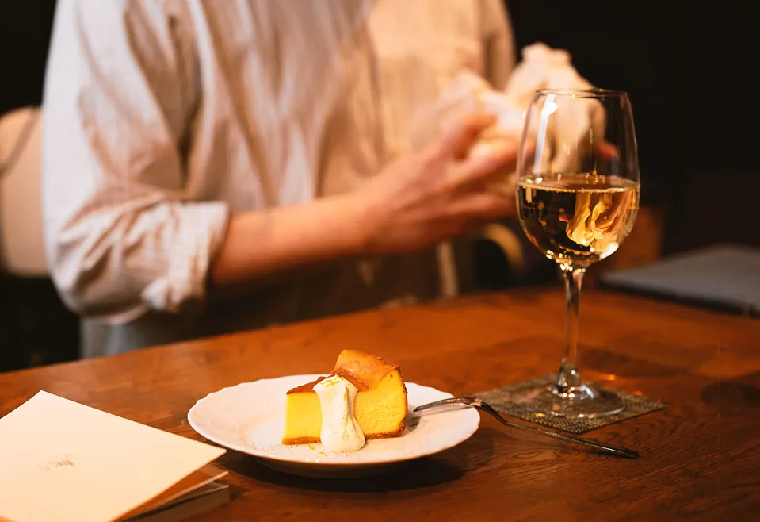
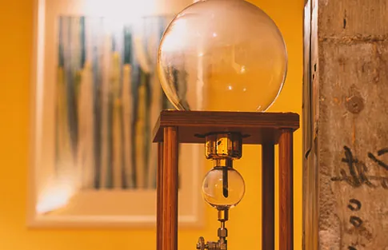

昼からBarやってます。
夜までcafeやってます。
evening bar & night cafe ano.café（アノ カフェ）― 仙台・国分町、勾当台公園駅から徒歩3分。ビルの2階にある、全13席の隠れ家です
※日曜・祝日は定休日です（祝日の場合、表示が実際と異なることがあります）。
★4.5
Google評価
51件
Google口コミ
13席
全席数
昼はカフェ、夜はバー。その枠にとらわれず、いつでも自由に過ごせる場所です。
国分町の一角、ビルの2階にひっそりと店を構えています。街の喧騒から少し離れて過ごせる、全13席だけの小さな空間です。
昼はランチとカフェ、夜はバーとして。お酒を片手にのんびり過ごす昼下がりも、夜にコーヒーとケーキでほっとひと息つく時間も、どちらも楽しめます。
バーと言っても堅苦しい雰囲気ではなく、カフェのような感覚で気軽に立ち寄れます。バー初心者の方や、女性のお一人様にもおすすめのお店です。
時間帯ごとに変わる、ano.caféの楽しみ方。
| ロイヤルブレンド | 900円 |
| マイルドブレンド | 800円 |
※コーヒー豆以外の価格は、店頭のメニューでご確認ください。写真：ano.café公式サイトより。
全13席。過ごし方に合わせて選べる、2つの席タイプ。

ご来店前に知っておくと安心なこと。
Instagramで最新情報をチェック
@ano.cafe_sendai ― 営業時間・臨時休業のお知らせはこちらから
| 店名 | evening bar & night cafe ano.café（アノ カフェ） |
|---|---|
| 住所 | 〒980-0803 宮城県仙台市青葉区国分町3-6-17 熊谷ビル2F |
| アクセス | 仙台市地下鉄南北線「勾当台公園駅」より徒歩3分 |
| 電話 | 022-797-2886 |
| 営業時間 | 月 14:00〜22:00（L.O.21:15） 火〜木 12:00〜22:00（L.O.21:15） 金 12:00〜23:00（L.O.22:15） 土 14:00〜23:00（L.O.22:15） ランチタイム（火〜金）12:00〜15:00 |
| 定休日 | 日曜日・祝日 |
| 席数 | 13席（カウンター5席・テーブル8席、ソファー席あり） |
| お支払い | クレジットカード可／電子マネー各種可 |
| 駐車場 | なし（近隣にコインパーキングあり） |
| 喫煙 | ランチタイムは全席禁煙／15時以降はカウンター席のみ可 |
| @ano.cafe_sendai |